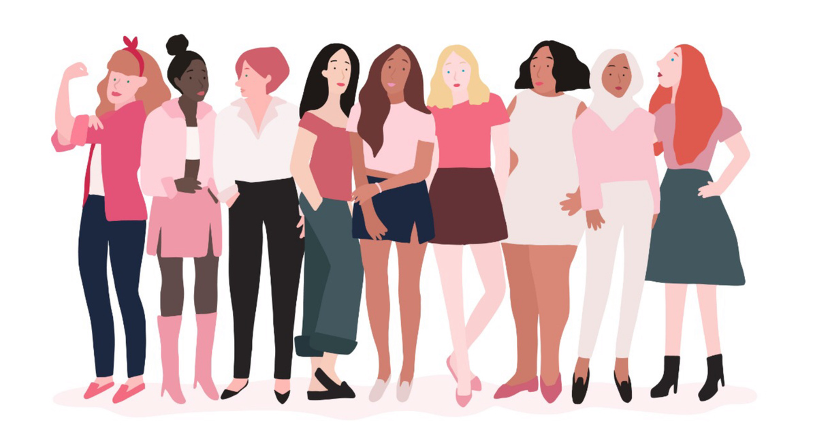

“En contra de la violencia y por la igualdad” es un proyecto que tiene como meta el proveer ayuda emocional a las mujeres de Puerto Rico que han sufrido de violencia de género, además de educar a la comunidad puertorriqueña sobre la violencia de género y la importancia de la igualdad de género. Nunca es muy tarde para actuar, educar y cambiar.
¡Hola, mi nombre es Grecia Muñoz! Desde chiquita siempre he tenido una pasión por el feminismo y todos los temas relacionados a la igualdad de género, así que por estas razones decidí que mi proyecto de programación fuese dirigido a tales temas.
Actualmente soy una estudiante de escuela superior, ha pasado mucho tiempo desde mis 10 años, pero aún así me encuentro igual de apasionada por el tema de la igualdad de género. A través de los años, he aprendido mucho sobre la realidad de la mujer en la comunidad puertorriqueña y los peligros que todas enfrentamos.
Ahora, más que nunca, es necesario traer conciencia a estas situaciones y esforzarnos a ser mejor de lo que eramos en el pasado.
Nuestra misión es proveerle a la comunidad femenina puertorriqueña del área metro con los recursos necesarios para sanar de sus experiencias de violencia de género y educar a todos en cuanto a los temas de violencia e igualdad de género.
Deseo cambiar y crear en mi comunidad las siguientes cosas: educar a la población masculina y femenina sobre la violencia de género, transformar el punto de vista al discutir la violencia e igualdad de género, formar grupos de ayuda y/o acción para apoyar a la comunidad y poner en lugar reuniones mensuales en las que se discutirá la violencia e igualdad de género. En el futuro, el crear una organización sin fines de lucro con el propósito de crear una conciencia activa dentro de la comunidad y más allá también sería un maravillo paso para adelante.
La solución planificada le ofrecerá a las mujeres de mi comunidad la oportunidad de compartir las dificultades que han enfrentado en su vida a causa de la patriarquía; además, le brindará más conocimiento a la comunidad sobre los tema de la violencia e igualdad de género.
Para empezar mi proyecto necesitaré ayuda de personas dispuestas a dar de su tiempo para ayudar y educar a nuestra comunidad. Sin ell@s, el proyecto no tendrá futuro; es un proyecto que depende enteramente en dedicación y consistencia.
Para comenzar este proyecto necesitaré de un lugar seguro y cómodo donde se puedan llevar a cabo las reuniones. También necesitaré acceso al internet para poder recopilar toda la información necesaria para crear presentaciones sobre los temas a discutir y poder proveer el mejor tipo de ayuda disponible.
Desde chica siempre he tenido muy presente que no siempre tendremos a alguien que nos apoye durante cada etapa de nuestras vidas, pero las personas que han sufrido de la violencia de género, esto es ecpecialmente doloroso. El deseo de sentirse aceptada, acompañada y entendida es algo que toda niña, joven y mujer necesita.
Mi mayor deseo al empezar este proyecto será el poder darle a las personas que han sufrido a causa de la violencia de género una comunidad que les abrirá las puertas y las aceptará. Seremos un grupo de apoyo, compañer@s y amig@s que darán de su mano y l@s ayudarán en cada paso de recuperación emocional.
En cuanto a la comunidad general, la educación sobre la violencia e igualdad de género es una acción que debe ser continua y siempre será necesaria. El proveer la información necesaria para educarse más profundamente sobre estos temas sin duda les dará a muchos la oportunidad de cambiar sus perspectivas y acciones.
Para ayudar a nuestra causa no tienes que necesariamente unirte a nuestro equipo. El concepto de “ayudar” puede tomar muchas formas y solo es importante que practiquemos al menos una de ellas. El interferir y apoyar a alguien que está siendo discriminado o atacado al momento del accidente es una de las maneras más válidas de ayuda, no todo tiene que ser a través de una organización. No te quedes quieto y/o callado.